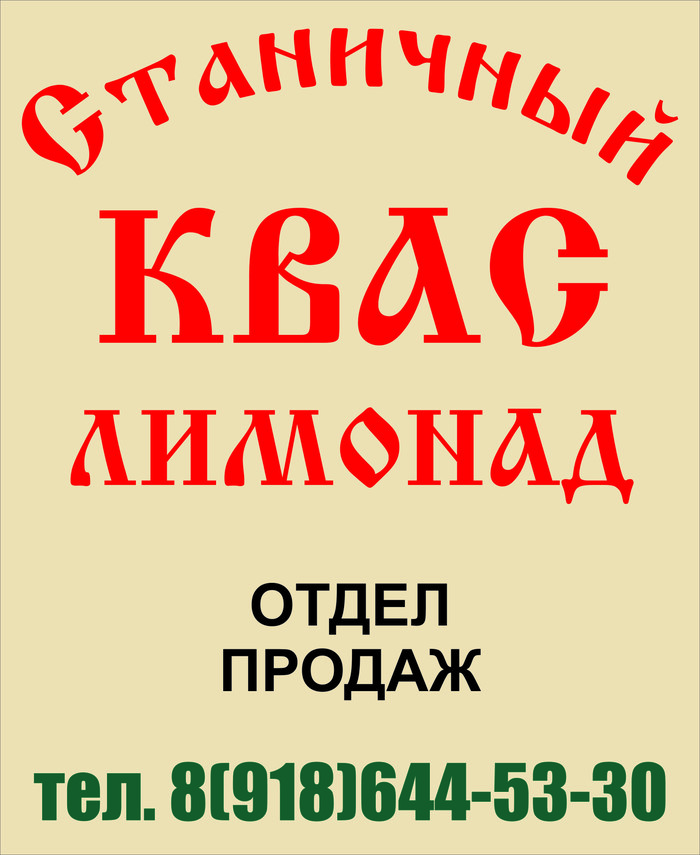
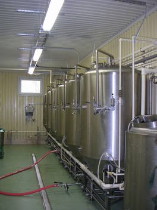

ИП Руденко А. О.
Производство кваса и безалкогольных напитков

Адрес производства: Краснодарский край Крымский район ст.Варениковская ул.Ленина 82
Производимая продукция
Предприятие производит живой хлебный квас «Станичный».
В его состав входят только натуральные ингредиенты.
Квас «Станичный» - продукт натурального брожения. Готовая продукция прошла обязательную сертификацию и соответствует требованиям нормативных документов.
Так же для реализации предлагаем безалкогольные газированные напитки на натуральном сахаре:
Квас «Станичный» - продукт натурального брожения. Готовая продукция прошла обязательную сертификацию и соответствует требованиям нормативных документов.
Так же для реализации предлагаем безалкогольные газированные напитки на натуральном сахаре:
- «Лимонад»
- «Мохито»
- «Буратино»
- «Барбарис».
Мы гарантируем своим клиентам:
- пищевую безопасность
- единый стандарт и стабильность качества
- безупречные вкусовые характеристики продукции
- стабильность и своевременность поставок.
Квас «Станичный»
Наш квас выгодно отличается от других.
Это натуральный, живого брожения квас.
Он приготавливается по традиционной рецептуре без применения консервантов, красителей, искусственно не газированный.
В процессе приготовления мы используем только лучшие и самые качественные ингредиенты:
- 100% натуральный солодовый экстракт,
- чистая вода из артезианской скважины, прошедшая 6-ступенчатую водоподготовку,
- дрожжи, наиболее подходящие для производства кваса.
О нас

Предприятие тяготеет к потребителю готовой продукции (кваса).
Сырьё, используемое в производстве, уже прошло первичную переработку.
Перевозить его выгоднее, чем готовую продукцию.
Сырьё, используемое в производстве кваса «Станичный»:
Сырьё, используемое в производстве кваса «Станичный»:
- концентрат квасного сусла,
- сахар,
- дрожжи хлебопекарные,
- вода.